from adjustText import adjust_text
from collections import Counter
from matplotlib import cm
from scipy.cluster.hierarchy import dendrogram, fcluster, linkage
from scipy.spatial.distance import squareform
from scipy.stats import multivariate_normal
from sklearn import preprocessing
from sklearn.cluster import KMeans
from sklearn.decomposition import PCA
from sklearn.mixture import GaussianMixture
import gower
import math
import matplotlib.pyplot as plt
import numpy as np
import pandas as pd
import prince
import random
import seaborn as sns
random.seed(123)
# Location of the data files. Adjust this path if you keep the data
# files in a different directory.
from pathlib import Path
DATA_DIR = Path('../../data')Chapter 7: Unsupervised Learning
- 2019-2026 Peter C. Bruce, Andrew Bruce, Peter Gedeck
Unsupervised Learning
Principal Components Analysis
A Simple Example
sp500_px = pd.read_csv(DATA_DIR / "sp500_data.csv.gz", index_col=0)
oil_px = sp500_px[["XOM", "CVX"]]
pcs = PCA(n_components=2)
pcs.fit(oil_px)
loadings = pd.DataFrame(pcs.components_, columns=oil_px.columns)
loadings| XOM | CVX | |
|---|---|---|
| 0 | 0.664711 | 0.747101 |
| 1 | 0.747101 | -0.664711 |
def abline(slope, intercept, ax):
"""Calculate coordinates of a line based on slope and intercept"""
x_vals = np.array(ax.get_xlim())
return (x_vals, intercept + slope * x_vals)
ax = oil_px.plot.scatter(x="XOM", y="CVX", alpha=0.3, figsize=(4, 4))
ax.set_xlim(-3, 3)
ax.set_ylim(-3, 3)
ax.plot(*abline(loadings.loc[0, "CVX"] / loadings.loc[0, "XOM"], 0, ax),
"--", color="C1")
ax.plot(*abline(loadings.loc[1, "CVX"] / loadings.loc[1, "XOM"], 0, ax),
"--", color="C1")
plt.tight_layout()
plt.show()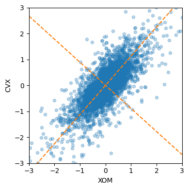
Interpreting Principal Components
syms = sorted(["AAPL", "MSFT", "CSCO", "INTC", "CVX", "XOM", "SLB", "COP",
"JPM", "WFC", "USB", "AXP", "WMT", "TGT", "HD", "COST"])
top_sp = sp500_px.loc[sp500_px.index >= "2011-01-01", syms]
sp_pca = PCA()
sp_pca.fit(top_sp)
explained_variance = pd.DataFrame(sp_pca.explained_variance_)
ax = explained_variance.head(10).plot.bar(legend=False, figsize=(4, 4))
ax.set_xlabel("Component")
plt.tight_layout()
plt.show()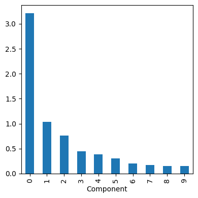
loadings = pd.DataFrame(sp_pca.components_[0:5, :], columns=top_sp.columns)
max_loading = 1.01 * np.max(np.max(np.abs(loadings.loc[0:5, :])))
f, axes = plt.subplots(5, 1, figsize=(5, 6), sharex=True)
for i, ax in enumerate(axes):
pc_loadings = loadings.loc[i, :]
colors = ["C0" if loading > 0 else "C1" for loading in pc_loadings]
ax.axhline(color="#888888")
pc_loadings.plot.bar(ax=ax, color=colors)
ax.set_ylabel(f"PC{i + 1}")
ax.set_ylim(-max_loading, max_loading)
plt.tight_layout()
plt.show()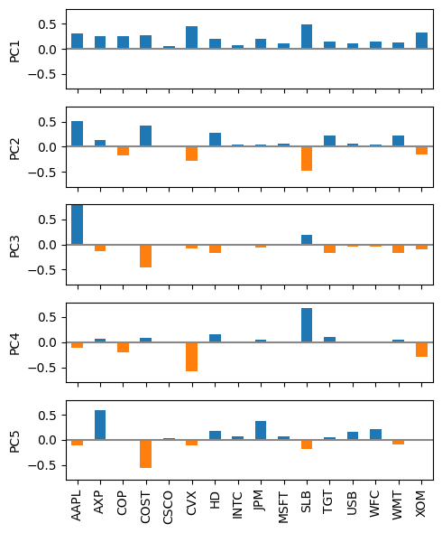
Correspondence Analysis
housetasks = pd.read_csv(DATA_DIR / "housetasks.csv", index_col=0)
ca = prince.CA(n_components=2)
ca = ca.fit(housetasks)
ax = ca.row_coordinates(housetasks).plot.scatter(x=0, y=1, figsize=(6, 6))
ca.column_coordinates(housetasks).plot.scatter(x=0, y=1, ax=ax, c="C1")
texts = []
for idx, row in ca.row_coordinates(housetasks).iterrows():
texts.append(plt.text(row[0], row[1], idx))
for idx, row in ca.column_coordinates(housetasks).iterrows():
texts.append(plt.text(row[0], row[1], idx, color="C1"))
adjust_text(texts, only_move={"points": "y", "texts": "y"})
plt.show()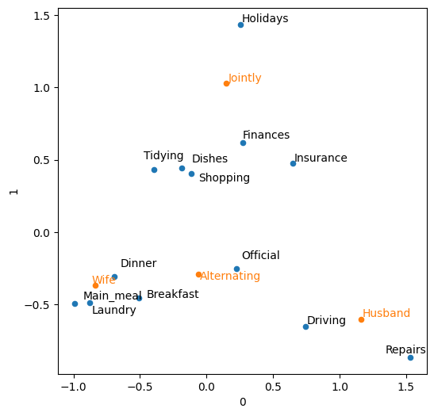
K-Means Clustering
A Simple Example
df = sp500_px.loc[sp500_px.index >= "2011-01-01", ["XOM", "CVX"]]
kmeans = KMeans(n_clusters=4).fit(df)df["cluster"] = kmeans.labels_
df.head()| XOM | CVX | cluster | |
|---|---|---|---|
| Date | |||
| 2011-01-03 | 0.736805 | 0.240681 | 1 |
| 2011-01-04 | 0.168668 | -0.584516 | 3 |
| 2011-01-05 | 0.026631 | 0.446985 | 1 |
| 2011-01-06 | 0.248558 | -0.919751 | 3 |
| 2011-01-07 | 0.337329 | 0.180511 | 1 |
centers = pd.DataFrame(kmeans.cluster_centers_, columns=["XOM", "CVX"])
centers| XOM | CVX | |
|---|---|---|
| 0 | -1.129224 | -1.729708 |
| 1 | 0.296863 | 0.392141 |
| 2 | 1.009182 | 1.489102 |
| 3 | -0.308915 | -0.521594 |
fig, ax = plt.subplots(figsize=(4, 4))
ax = sns.scatterplot(x="XOM", y="CVX", hue="cluster", style="cluster",
ax=ax, data=df)
ax.set_xlim(-3, 3)
ax.set_ylim(-3, 3)
centers.plot.scatter(x="XOM", y="CVX", ax=ax, s=50, color="black")
plt.tight_layout()
plt.show()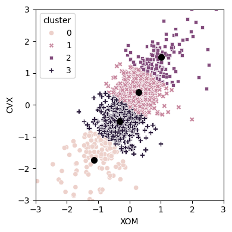
K-Means Algorithm
syms = sorted(["AAPL", "MSFT", "CSCO", "INTC", "CVX", "XOM", "SLB", "COP",
"JPM", "WFC", "USB", "AXP", "WMT", "TGT", "HD", "COST"])
top_sp = sp500_px.loc[sp500_px.index >= "2011-01-01", syms]
kmeans = KMeans(n_clusters=5).fit(top_sp)Interpreting the Clusters
Counter(kmeans.labels_)Counter({np.int32(0): 280,
np.int32(3): 251,
np.int32(1): 220,
np.int32(2): 194,
np.int32(4): 186})centers = pd.DataFrame(kmeans.cluster_centers_, columns=syms)
f, axes = plt.subplots(5, 1, figsize=(5, 6), sharex=True)
for i, ax in enumerate(axes):
center = centers.loc[i, :]
max_center = 1.01 * np.max(np.max(np.abs(center)))
colors = ["C0" if cc > 0 else "C1" for cc in center]
ax.axhline(color="#888888")
center.plot.bar(ax=ax, color=colors)
ax.set_ylabel(f"Cluster {i + 1}")
ax.set_ylim(-max_center, max_center)
plt.tight_layout()
plt.show()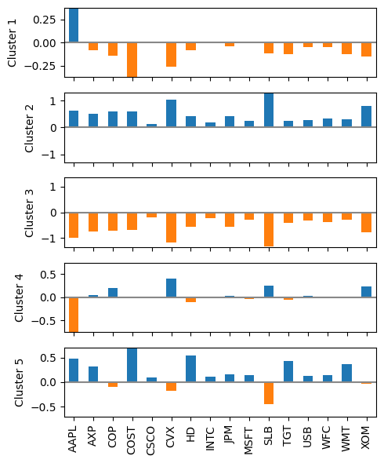
Selecting the Number of Clusters
inertia = []
for n_clusters in range(2, 15):
kmeans = KMeans(n_clusters=n_clusters, random_state=0).fit(top_sp)
inertia.append(kmeans.inertia_ / n_clusters)
inertias = pd.DataFrame({"n_clusters": range(2, 15), "inertia": inertia})
ax = inertias.plot(x="n_clusters", y="inertia")
plt.xlabel("Number of clusters(k)")
plt.ylabel("Average Within-Cluster Squared Distances")
plt.ylim((0, 1.1 * inertias.inertia.max()))
ax.legend().set_visible(False)
plt.tight_layout()
plt.show()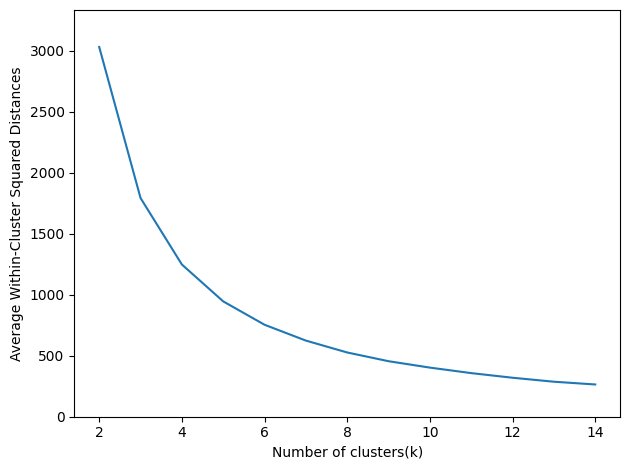
Hierarchical Clustering
A Simple Example
syms1 = ["AAPL", "AMZN", "AXP", "COP", "COST", "CSCO", "CVX", "GOOGL", "HD",
"INTC", "JPM", "MSFT", "SLB", "TGT", "USB", "WFC", "WMT", "XOM"]
df = sp500_px.loc[sp500_px.index >= "2011-01-01", syms1].transpose()
Z = linkage(df, method="complete")The Dendrogram
fig, ax = plt.subplots(figsize=(5, 5))
dendrogram(Z, labels=list(df.index), ax=ax, color_threshold=0)
plt.xticks(rotation=90)
ax.set_ylabel("distance")
plt.tight_layout()
plt.show()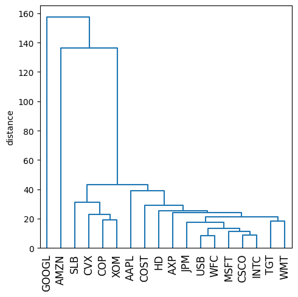
memb = fcluster(Z, 4, criterion="maxclust")
memb = pd.Series(memb, index=df.index)
for key, item in memb.groupby(memb):
print(f"{key} : {', '.join(item.index)}")1 : COP, CVX, SLB, XOM
2 : AAPL, AXP, COST, CSCO, HD, INTC, JPM, MSFT, TGT, USB, WFC, WMT
3 : AMZN
4 : GOOGLModel-Based Clustering
Mixtures of Normals
df = sp500_px.loc[sp500_px.index >= "2011-01-01", ["XOM", "CVX"]]
mclust = GaussianMixture(n_components=2).fit(df)
mclust.bic(df)4589.820626249873fig, ax = plt.subplots(figsize=(4, 4))
colors = [f"C{c}" for c in mclust.predict(df)]
df.plot.scatter(x="XOM", y="CVX", c=colors, alpha=0.5, ax=ax)
ax.set_xlim(-3, 3)
ax.set_ylim(-3, 3)
plt.tight_layout()
plt.show()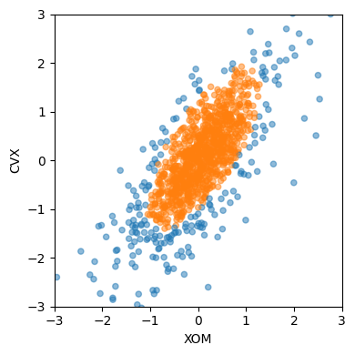
print("Mean")
print(mclust.means_)
print("Covariances")
print(mclust.covariances_)Mean
[[-0.05050178 -0.21237957]
[ 0.07225117 0.10452744]]
Covariances
[[[0.97385279 0.98028909]
[0.98028909 1.67646834]]
[[0.26868436 0.27606914]
[0.27606914 0.51762673]]]Selecting the Number of Clusters
results = []
covariance_types = ["full", "tied", "diag", "spherical"]
for n_components in range(1, 9):
for covariance_type in covariance_types:
mclust = GaussianMixture(n_components=n_components, warm_start=True,
covariance_type=covariance_type)
mclust.fit(df)
results.append({
"bic": mclust.bic(df),
"n_components": n_components,
"covariance_type": covariance_type,
})
results = pd.DataFrame(results)
colors = ["C0", "C1", "C2", "C3"]
styles = ["C0-", "C1:", "C0-.", "C1--"]
fig, ax = plt.subplots(figsize=(4, 4))
for i, covariance_type in enumerate(covariance_types):
subset = results.loc[results.covariance_type == covariance_type, :]
subset.plot(x="n_components", y="bic", ax=ax, label=covariance_type,
kind="line", style=styles[i])
plt.tight_layout()
plt.show()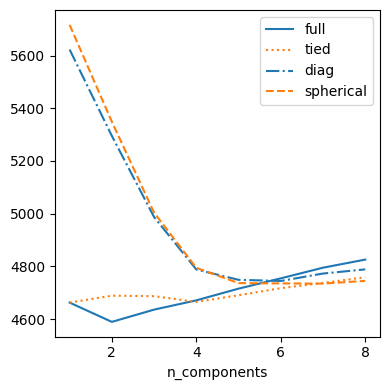
Scaling and Categorical Variables
Scaling the Variables
loan_data = pd.read_csv(DATA_DIR / "loan_data.csv.gz")
defaults = loan_data.loc[loan_data["outcome"] == "default",]
columns = ["loan_amnt", "annual_inc", "revol_bal", "open_acc",
"dti", "revol_util"]
df = defaults[columns]
kmeans = KMeans(n_clusters=4, random_state=1).fit(df)
counts = Counter(kmeans.labels_)
centers = pd.DataFrame(kmeans.cluster_centers_, columns=columns)
centers["size"] = [counts[i] for i in range(4)]
centers| loan_amnt | annual_inc | revol_bal | open_acc | dti | revol_util | size | |
|---|---|---|---|---|---|---|---|
| 0 | 17809.760881 | 78669.452556 | 18933.405997 | 11.594003 | 17.016428 | 62.183810 | 7906 |
| 1 | 21444.318867 | 148736.057263 | 33152.689572 | 12.376733 | 13.831145 | 63.151084 | 1654 |
| 2 | 24290.909091 | 409746.465909 | 84710.988636 | 13.431818 | 8.148636 | 60.015647 | 88 |
| 3 | 10274.160906 | 41241.205530 | 9950.095008 | 9.480338 | 17.718588 | 57.903425 | 13023 |
scaler = preprocessing.StandardScaler()
df0 = scaler.fit_transform(df * 1.0)
kmeans = KMeans(n_clusters=4, random_state=1).fit(df0)
counts = Counter(kmeans.labels_)
centers = pd.DataFrame(scaler.inverse_transform(kmeans.cluster_centers_),
columns=columns)
centers["size"] = [counts[i] for i in range(4)]
centers| loan_amnt | annual_inc | revol_bal | open_acc | dti | revol_util | size | |
|---|---|---|---|---|---|---|---|
| 0 | 13484.728906 | 55907.993263 | 16435.803337 | 14.322265 | 24.211535 | 59.463608 | 6244 |
| 1 | 25950.205142 | 116834.142232 | 32945.972921 | 12.396335 | 16.165914 | 66.123542 | 3670 |
| 2 | 10507.283093 | 51117.994063 | 11635.285252 | 7.509513 | 15.931561 | 77.795077 | 7397 |
| 3 | 10324.846369 | 53456.824767 | 6054.819926 | 8.664618 | 11.312983 | 30.999874 | 5360 |
Dominant Variables
syms = ["GOOGL", "AMZN", "AAPL", "MSFT", "CSCO", "INTC", "CVX", "XOM",
"SLB", "COP", "JPM", "WFC", "USB", "AXP", "WMT", "TGT", "HD", "COST"]
top_sp1 = sp500_px.loc[sp500_px.index >= "2005-01-01", syms]
sp_pca1 = PCA()
sp_pca1.fit(top_sp1)
explained_variance = pd.DataFrame(sp_pca1.explained_variance_)
ax = explained_variance.head(10).plot.bar(legend=False, figsize=(4, 4))
ax.set_xlabel("Component")
plt.tight_layout()
plt.show()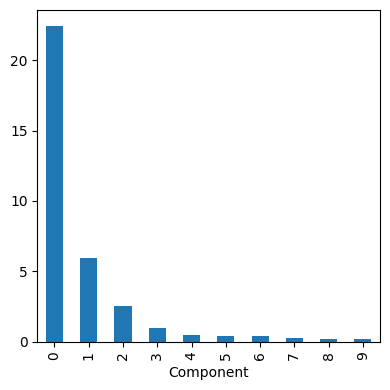
loadings = pd.DataFrame(sp_pca1.components_[0:2, :], columns=top_sp1.columns)
loadings.transpose()| 0 | 1 | |
|---|---|---|
| GOOGL | 0.857310 | -0.477873 |
| AMZN | 0.444728 | 0.874149 |
| AAPL | 0.071627 | 0.020802 |
| MSFT | 0.036002 | 0.006204 |
| CSCO | 0.029205 | 0.003045 |
| INTC | 0.026666 | 0.006069 |
| CVX | 0.089548 | 0.037420 |
| XOM | 0.080336 | 0.020511 |
| SLB | 0.110218 | 0.030356 |
| COP | 0.057739 | 0.024117 |
| JPM | 0.071228 | 0.009244 |
| WFC | 0.053228 | 0.008597 |
| USB | 0.041670 | 0.005952 |
| AXP | 0.078907 | 0.024027 |
| WMT | 0.040346 | 0.007141 |
| TGT | 0.063659 | 0.024662 |
| HD | 0.051412 | 0.032922 |
| COST | 0.071403 | 0.033826 |
Categorical Data and Gower’s Distance
X = defaults[["dti", "payment_inc_ratio", "home_", "purpose_"]].head(5)
gower.gower_matrix(X, cat_features=[False, False, True, True])array([[0. , 0.62204784, 0.68638766, 0.63290393, 0.37727892],
[0.62204784, 0. , 0.8143398 , 0.7608561 , 0.5389727 ],
[0.68638766, 0.8143398 , 0. , 0.43070832, 0.30910876],
[0.63290393, 0.7608561 , 0.43070832, 0. , 0.505625 ],
[0.37727892, 0.5389727 , 0.30910876, 0.505625 , 0. ]],
dtype=float32)X = defaults[["dti", "payment_inc_ratio", "home_", "purpose_"]].sample(250,
random_state=1)
D = gower.gower_matrix(X, cat_features=[False, False, True, True])
condensed_D = squareform(D)
Z = linkage(condensed_D, method="complete")
fig, ax = plt.subplots(figsize=(5, 5))
dendrogram(Z, labels=list(X.index), ax=ax, color_threshold=0.5)
ax.axhline(y=0.5, color="red", linestyle="--")
ax.set_xticks([])
ax.set_ylabel("distance")
plt.tight_layout()
plt.show()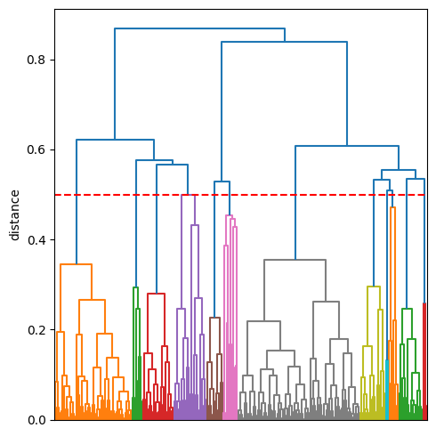
memb = fcluster(Z, t=0.5, criterion="distance")
X[memb == 1].head(20)| dti | payment_inc_ratio | home_ | purpose_ | |
|---|---|---|---|---|
| 15604 | 29.44 | 14.67510 | MORTGAGE | debt_consolidation |
| 20641 | 24.80 | 13.14330 | MORTGAGE | debt_consolidation |
| 21238 | 20.67 | 9.92934 | MORTGAGE | debt_consolidation |
| 20178 | 22.97 | 12.81220 | MORTGAGE | debt_consolidation |
| 6614 | 16.85 | 10.03790 | MORTGAGE | debt_consolidation |
| 15223 | 18.15 | 20.56450 | MORTGAGE | debt_consolidation |
| 12593 | 17.09 | 13.00490 | MORTGAGE | debt_consolidation |
| 14883 | 18.69 | 9.88416 | MORTGAGE | debt_consolidation |
| 4828 | 12.57 | 3.62216 | MORTGAGE | debt_consolidation |
| 22541 | 27.24 | 6.81531 | MORTGAGE | debt_consolidation |
| 19481 | 8.04 | 3.90824 | MORTGAGE | debt_consolidation |
| 5198 | 15.50 | 8.77321 | MORTGAGE | debt_consolidation |
| 21776 | 17.74 | 6.94416 | MORTGAGE | debt_consolidation |
| 16556 | 11.20 | 5.98890 | MORTGAGE | debt_consolidation |
| 8167 | 27.08 | 9.17446 | MORTGAGE | debt_consolidation |
| 14688 | 17.72 | 10.61280 | MORTGAGE | debt_consolidation |
| 7947 | 10.75 | 12.80830 | MORTGAGE | debt_consolidation |
| 16732 | 25.47 | 7.18680 | MORTGAGE | debt_consolidation |
| 11288 | 16.90 | 8.22888 | MORTGAGE | debt_consolidation |
| 2098 | 23.28 | 5.01420 | MORTGAGE | debt_consolidation |
Problems with Clustering Mixed Data
columns = ["dti", "payment_inc_ratio", "home_", "pub_rec_zero"]
df = pd.get_dummies(defaults[columns])
scaler = preprocessing.StandardScaler()
df0 = scaler.fit_transform(df * 1.0)
kmeans = KMeans(n_clusters=4, random_state=1).fit(df0)
centers = pd.DataFrame(scaler.inverse_transform(kmeans.cluster_centers_),
columns=df.columns)
centers| dti | payment_inc_ratio | pub_rec_zero | home__MORTGAGE | home__OWN | home__RENT | |
|---|---|---|---|---|---|---|
| 0 | 21.431365 | 12.354001 | 0.943315 | -1.942890e-15 | 4.718448e-16 | 1.000000e+00 |
| 1 | 12.743276 | 5.918701 | 0.900372 | -1.276756e-15 | 1.526557e-16 | 1.000000e+00 |
| 2 | 17.339786 | 8.353535 | 0.905716 | 1.000000e+00 | -5.134781e-16 | -4.163336e-15 |
| 3 | 17.197993 | 9.266666 | 0.917903 | 1.054712e-15 | 1.000000e+00 | -2.775558e-16 |
Supplementary Material
Figure 7-4. Graphical representation of a correspondence analysis of house task data
Figure 7-5. The clusters of K-means applied to daily stock returns for ExxonMobil and Chevron
Figure 7-9. A comparison of measures of dissimilarity applied to stock data
df = sp500_px.loc[sp500_px.index >= "2011-01-01", ["XOM", "CVX"]]
fig, axes = plt.subplots(nrows=2, ncols=2, figsize=(5, 5))
for i, method in enumerate(["single", "average", "complete", "ward"]):
ax = axes[i // 2, i % 2]
Z = linkage(df, method=method)
colors = [f"C{c + 1}" for c in fcluster(Z, 4, criterion="maxclust")]
ax = sns.scatterplot(x="XOM", y="CVX", hue=colors, style=colors,
size=0.5, ax=ax, data=df, legend=False)
ax.set_xlim(-3, 3)
ax.set_ylim(-3, 3)
ax.set_title(method)
plt.tight_layout()
plt.show()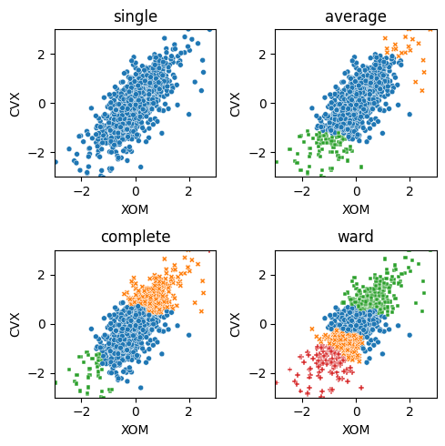
Figure 7-10. Probability contours for a two-dimensional normal distribution
mean = [0.5, -0.5]
cov = [[1, 1], [1, 2]]
probability = [0.5, 0.75, 0.95, 0.99]
def prob_level(p):
return (1 - p) / (2 * math.pi)
levels = [prob_level(p) for p in probability]
fig, ax = plt.subplots(figsize=(5, 5))
x, y = np.mgrid[-2.8:3.8:.01, -5:4:.01]
pos = np.empty((*x.shape, 2))
pos[:, :, 0] = x; pos[:, :, 1] = y
rv = multivariate_normal(mean, cov)
CS = ax.contourf(x, y, rv.pdf(pos), cmap=cm.GnBu, levels=50)
ax.contour(CS, levels=levels, colors=["black"])
ax.plot(*mean, color="black", marker="o")
plt.tight_layout()
plt.show()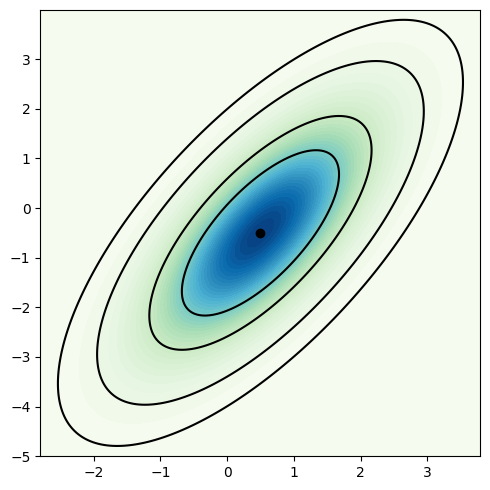